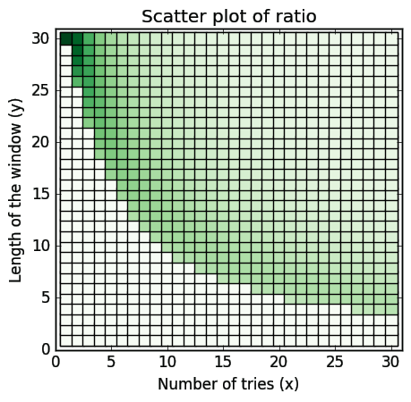

HOWTO listen to a Discover Weekly playlist? (the lazy way)
Posted on Mon 20 February 2017 in ideas • 20 min read
I listen to music a lot and have no problem with obsessing over one song that catches my ear for days. Nonetheless it's good to have some "movement in the business" as we Poles like to say, and since I've never managed to develop any structured or habitual way to go about this, I am a big fan of Spotify's Discover Weekly playlist.
If you don't know what I'm talking about, two remarks are in order.
- Congratulations on your information diet.
- It's a recommendation service that every Monday morning puts up a playlist consisting of 30 "songs that you may like".
While we're on the subject — it seems to work surprisingly well1 and if you want to know more about the magic behind it, you can check out this article.
But let's go back to our story.
So, one October Monday evening I was sitting in a bus, coming home from Uni, listening to the aforementioned playlist when suddenly a thought comes to my head:
Am I doing this wrong?
THE LAZY WAY
What was I doing and what could be wrong about it?
Well, if the goal of the Discover Weekly playlist is to find as many great new songs as possible then you definitely have to listen to all of them. Otherwise you leave room for this creepy neurotic guy2 in your head who goes like:
Ooh... I bet there was a really great song that you missed and now you'll never know about it!
And that's just bad emotional hygiene. So if you want to make sure you'll check out every song, the best way to go about it is to just listen to your Discover Weekly, from top to bottom, without switching between playlists, songs etc. Or, If you do want to switch playlists, or happen to sometimes switch off your phone/computer/tablet what you should be doing is either remembering or writing down somewhere the name of the song you stopped at, so you can restart listening at the right place (notice that in this case shuffling won't come in handy).
The above description has nothing in common with the way I use Spotify. I switch between playlists a lot, if a song pops into to my head I search for it, I always use shuffle. Basically, I like to keep a little chaos going on. The vision of writing down songs I finished listening at or cluttering my brain's RAM with the appropriate title is very unconvincing.
This is the lazy way ladies and gentlemen — our main objective is to not change our listening habits!
But how stupid or wise is it not to change them? In other words: what is the probability of listening to every song on the Discover Weekly when you restart it on shuffle a lot during the week each time listening to only a couple of songs?
THE PROBLEM
Ok, so we know what we want to know but that's only the first step. And I'm still on the bus. But now it's a little bit later and I am trying to formulate this problem in somewhat more precise mathematical terms.
As always in this business we have to start with some assumptions. Let's say you listen to the Discover Weekly twice a day during the commute, which takes around half an hour. Estimating that a song is on average 5 minutes long, this gives us 6 songs per shuffled playlist (we can think of it as a "window" of listening). And, what the heck, let's say that you do this commute not only Monday to Friday but every day, so we will have 14 shuffles in one week.
At first glance we are dealing with three variables here. The size of our playlist (lets call it \(n\)), the number of times we are replaying the playlist, hence making a shuffle (let's call it \(x\)) and the number of songs that constitutes "the head" of a shuffled playlist which we will listen to in each "window" (let's call it \(y\)).
Alrightyroo. So it seems that what we are looking for is a formula for a function \(f\) that takes three arguments \(n,x,y\) and spits out the probability of getting all elements of \(n\), considering that we make \(x\) random samples of \(n\), and from each sample we take only first \(y\) elements.
You'll be able to adjust the above estimations to your liking once we have a formula. But what is important to notice is that the weakest assumption we're making here (due to simplicity) is that all the windows have the same length. That doesn't sound very probable, since you may easily listen to three songs on one sitting and to thirteen on another. But even though our model is a bit simplified it would still be quite cool to know your chances, wouldn't it?
At this point in the story I'm entering my apartment and the best procrastination time in October is about to begin (yeah, I had other things to do).
A QUICK FLASHBACK FROM HIGH SCHOOL MATH...
If the meaning of "factorial" and "binomial coefficent" is well known to you, you can fearlessly skip this part. If not — the flashback is for you; it will come in handy later.
A typical problem in your high school probability class could go something like:
You and your four friends are going to the movies. While you were standing in line for the tickets you started to wonder in how many ways could you occupy the chairs in the movie theater. Help yourself by finding the answer.
My favourite way of explaining this problem goes like this:
We have five chairs: _ _ _ _ _. Each time we create a particular sitting we connect a person to a particular chair.
The key here is to look at the situation slowly and from the perspective of the chairs. We have a chair #1. No one is seated yet. How many options do we have to pick someone to sit in this chair? It can be any of the friends, so we have 5 options. Now, our situation looks like this: 5 _ _ _ _. Moving on to the chair #2. How many options do we have now? Well, we have four friends left, so now we can choose in 4 different ways a person for the second spot — 5 4 _ _ _. Continuing in this spirit we get the following: 5 4 3 2 1. What do we do with those numbers? We multiply them! Why not adding them? Well, because for every guest you seated on the first chair you have 4 choices on the second chair and for every two guests you have chosen you got 3 options on the third chair and so on.
The operation of multiplying a natural number \(n\) by every natural number smaller then \(n\) down to 1 is called factorial and is denoted by the well known symbol of exclamation mark. Hence our answer is \(5*4*3*2*1=5!=120\).
Now consider a follow-up question:
Unfortunately the movie you picked is very popular and there are no five seats in any row left. You have to split up picking three seats in the last row and two seats in the second. How many options do you have for deciding who will be a part of the last row group?
In answering this one, we can start from what we've already learned. We have three chairs and five people to choose from so maybe the answer is \(5*4*3=60\)? Well... Not exactly. The problem we are trying to solve here is this: in how many ways can we choose three out of five people? Notice that the order of the people we choose is not relevant i.e. Adam, Bart and Cathy constitute the same group as Cathy, Adam and Bart. Hence our first guess is too big because we counted the same group more then once. How many times exactly? Well, how many options are there for placing three people in a row? We already know that — it's \(3!=6\). So in our candidate answer we have six exemplars for every group type. So the only thing we have to do now is shrinking all this exemplars to one representative which means we need to divide by 6. That gives us the final answer: \(\frac{5*4*3}{3!}=\frac{60}{6}=10\).
The number of possible choices when choosing \(k\) out of \(n\) objects (disregarding order) is denoted by something called binomial coefficient: \({n\choose k}=\frac{n!}{k!(n-k)!}\).3
This formula looks a little different from our method but in fact they are equivalent. We just did the division \(\frac{n!}{(n-k)!}=\frac{5*4*3*2*1}{2*1}\) implicitly, hence our nominator was equal to \(5*4*3\).
...AND NOW WE'RE BACK
First things first: we need some empirical data. I had a couple of vague ideas what a formula might look like, but it would be nice to know the actual answers for some \(n\)s, \(x\)s and \(y\)s in order to have a method for checking if we're on the right track or, in the worst case scenario where we don't find a formula, just get the answer brute-forcefully.
Not so soon after that an uglier version of this code was up & running:
import itertools
def filter_heads(p, head):
# This function flattens a tuple of tuples into list of gotten heads
# filter_heads(((1,4,2,3), (3,1,2,4)), 2) => [1,4,3,1]
return [y for x in p for y in x[:head]]
def brute_prob(n, x, y):
# all possible permutations of our initial set
permuts = [p for p in itertools.permutations(range(n))]
# list of every possible outcome of our experiment. Shrinked to y-long heads.
space = [filter_heads(prdct, y) for prdct in itertools.product(permuts, repeat=x)]
# the number of outcomes in which we got all elements of our initial set
good = sum([1 for outcome in space if len(set(outcome)) == n])
return (good / len(space))
What is being done here is nothing more than a brutal generation of our problem's probability space. With permuts we generate all possible shuffles (there are \(n!\) of those), then with space we generate every possible combination of \(x\) shuffles (\(n!^x\)). In good we count the number of times when we got all elements of \(n\) and finally we return the appropriate probability in a good ol' frequentist way.
Ok! So now we can just run brute_prob(30,14,6), get our answer and be done with all this, right?
Not so fast.
This is actually where one can easily see the shortcomings of brute force generation. For example for \(n=30\) and \(x=4\) the list under space variable would need to store \(30!^{4} = 4.9504 * 10^{129}\) elements which is a little more then the estimated number of hydrogen atoms in our universe.4 Factorial is a cheeky little beast that grows very big very fast. You don't want your program to execute this kind of computations. Believe me, I learned it the hard way.
| n | x | y | probability |
|---|---|---|---|
| 4 | 3 | 2 | 53% |
| 4 | 2 | 3 | 75% |
| 5 | 3 | 2 | 18% |
| 5 | 2 | 3 | 30% |
| 5 | 3 | 3 | 69% |
| 5 | 2 | 4 | 80% |
| 5 | 3 | 4 | 96% |
So I didn't have much of a choice but to run tests for smaller arguments. How much smaller? Let's take \(n=5\) and \(x=4\). These are nice small numbers, right? Alas, the trickery doesn't stop here. According to sys.getsizeof() a list of 4 integers takes 96 bytes of space in memory, so for representing all combinations we would need a spare \(\frac{(5!)^4*96}{1073741824}=18.54\)GB in our RAM. I don't know about you but I have 8GB total on my faithful mid-2009 MacBook Pro, so I had to say sayonara to testing for \(x>3\). On the right though you can see some example results I was able to squeeze out.
So there I was, looking at my freshly printed probabilities (not too many, but they will have to do), ready to find out what the correct formula is.
Except... I didn't. Long story short — after hours of wrestling with this problem I got closer but in no way close enough. To be completely honest: I wasn't even that surprised since this combinatorics business had never been my strong point.
So... What now? Is this all there is?
Well... This post is also about how sometimes you don't need to have all the answers if you are willing to ask for help and know where you can find it.
THE SOLUTION
aka
WHAT I SHOULD'VE BEEN DOING
God bless StackExchange.
On Tuesday I posted my question on mathoverflow. Since this site is dedicated to professional mathematicians I was a bit worried that my problem would be considered as spam there. But, as it turned out there is also a place for the profaners where my question has been migrated thanks to caring and helpful admins.
Couple of hours later I had my answer (thanks again Kevin Long, whoever you are).
Are you ready?
The formula we were looking for is...
drumroll, please
Whoa! This beauty is as magnificent as it is scary. But bear with me, we're gonna go through it step by step.
As it turns out, the proper way to approach this problem was to do it backwards i.e. to count the scenarios where we didn't get all elements of the initial set.
First of all — what the hell is this: \(\sum_{i=1}^{n}\)?
To put it in rhyme: it's a sigma notation for a summation operation.
It's meaning is very simple: starting from \(i=1\) calculate the value of an expression on the right, then increment \(i\) by 1, calculate the value for this \(i\) and add it to the previous one, and so on until you calculate the expression for \(i=n\). Basically it's a shortcut for writing long additions.
Why are we subtracting this sum from \(1\)? That's because of the backward approach. When we'll find out the probability of not getting every element of our initial set, we'll have to subtract it from one in order to get the probability of getting every element of the initial set since these two events are mutually exclusive.
Let's work on example in order to grasp what's going on here. Take \(n=4\), \(x=3\) and \(y=2\). We have a playlist of four songs: \(a, b, c, d\), we are playing it three times on shuffle, each time listening to the first two songs.
We want to count the probability of not getting 1, 2, 3, 4 elements. First remark: it's impossible not to get at least two elements since \(y=2\). In the worst case scenario each time we play a playlist the first two songs will be the same, but then we still got two out of four songs.
Let's start with not getting one element, \(a\) for example. Every time then a "head" of our playlist must be made out of three \((n-1)\) elements: \(b\), \(c\) and \(d\). The head is \(y=2\) songs long. How many possible heads are there? We know how to choose two out of three elements: \({3\choose 2}\), but that doesn't take into account the order of the elements which in this case is important since \(bcda\) is a different shuffle then \(cbda\). In how many ways can we arrange two elements? It's \(2!\). So the number of possible heads where there is no \(a\) equals to \({3\choose 2}*2!=6\), namely \(\{bc, cb, cd, dc, bd, db\}\).
We can't forget about the tail though. As above, the playlists \(bcda\) and \(bcad\) are different. How many elements are in the tail? In our case two, \(n-y\) in general. So for every 6 heads we have \(2!\) options to arrange the remaining two songs in the tail.
Once we got the number of \(a\)less playlists we have to divide it by the total number of all shuffled playlists (\(n!\)) to get the probability of an event that in one shuffling you will get a result without song \(a\) in the head. This equals to \(\frac{{3\choose 2}*2!*2!}{4!}=\frac{12}{24}=\frac{1}{2}\). In order to never listen to \(a\), this event must happen each time we play the playlist (i.e. \(x\) times). So in this case the chances for this are \((\frac{1}{2})^3=\frac{1}{8}=0.125\).
Do you see what I'm getting at?
Yep. This last bit is a probability of not getting \(i\) elements. But let's go back to our case study in order to grasp this \({n \choose i}\) part.
We did our reasoning for \(a\) but it is the same for other elements. So the probability of missing any one of the elements will be four times the probability of missing \(a\), since there are four elements. In general though the number of choosing \(i\) out of \(n\) elements is, you guessed it, \({n \choose i}\). And we want to multiply this number by the probability of missing \(i\) elements to take into account all possible ways of missing one, two, three, \(i\)... elements. So when we want to count the possible ways of missing two elements, there are \({4\choose 2}=6\) possible pairs to exclude, and for every one of them proability of exclusion equals to \((\frac{{4-2 \choose 2}2!(4-2)!}{4!})^3=\frac{1}{216}\), so the total probability of missing two elements is \(\frac{1}{36}\).
What do we do now? We add the probability of leaving out one element and the probability of leaving out two elements and get the total probability of leaving out one or two elements, right?
Wait a moment. If everything is so smooth, what is this weird \((-1)^{i-1}\) part for you ask?
Good thinking. Not everything is so smooth. We double counted. Double counting is probably the least sexy idea in probability and, as it often is with not sexy things, it's molto importante.
Consider a shuffle \(abcd\). In our case this combination misses \(c\) but it also misses \(d\). We counted this particular shuffle twice — when we were counting the scenarios for missing \(c\) and for missing \(d\). What's more this shuffle was also included in counting the scenarios when two elements — \(b\) and \(c\) — are missing. Hence if we were to add the probabilities for \(i=1\) and \(i=2\) we would be overestimating, counting the same observation three times instead of one.
Think about the nominator when we estimated the probability of missing \(a\). There were \(12\) possible shuffles wherein we missed it. We already know that the total amount of ways in which our playlist can be shuffled is \(n!\), or 24 in our case with \(n=4\). When we multiplied it by four because of the fact that we could make the same reasoning for each of the elements, the total sum of counted scenarios added to \(4*12=48\). Twice as much as the number of all possible shuffles! That's not good. And that happens because the events of, for example, missing \(a\) and missing \(b\) are not mutually exclusive.
Here comes the inclusion-exclusion principle. It's a brilliant method to deal with exactly the problem we are facing here. When you try to asses the size of the sum of two sets, what you have to do is to add the sizes of both sets together and then subtract the intersection of these sets. If they do not have common elements the you will be subtracting an empty set and if they do you will subtract exactly those elements which were counted twice.
From this rationale stems the principle which is further generalised. The algorithm it produces for proper counting takes into account the oddness of the number of sets taking part in the intersection which we are counting. For us it means that we should be adding the probability of missing \(i\) elements when \(i\) is odd, and subtract it when \(i\) is even.
In our example we are doing only two first steps of this algorithm since we can only miss one or two elements. This limit of elements we can miss is given by \(n-y\). If we'd chosen bigger \(n\) like five, we would be subtracting too much in the second iteration because ways of missing two elements would include ways of missing three elements. Hence we would need to compensate for that by again adding the probability of missing three elements. If you feel like not everything is clear here and want more details on the inclusion-exclusion principle I recommend diving in the Wikipedia article linked above.
Look at this weird bit again: \((-1)^{i-1}\) and consider a few possible \(i\)s. When \(i\) is odd we will be raising \(-1\) to the even power, which will yield \(1\), which will change nothing in the calculated probability. When \(i\) is even the power would be odd, hence yielding \(-1\). This will result in subtracting the calculated probability.
That's all that happens here.
- i is the number of elements we want to miss, up to n-y, because we cannot miss more.
- deciding if we're gonna add or subtract according to inclusion-exclusion principle
- number of ways in which we can miss i elements
- probability of missing i elements
I hope that at this point the formula is no longer scary but rather quite comprehensible. You can read the original answer I received here.5
Phew!
We can now begin the aka part.
Remember our initial conceptualisation? Based on a scenario when someone is listening to discover weekly twice a day during a commute which takes 30 minutes (~6 songs), counting weekends as well, we want to know the value of \(f(30, 14, 6)\).
In order to do this we need to implement the formula:
# since we don't want to depend too much on imports
# we gonna have to implement couple of things ourselves.
def fact(n, acc=1):
# simple factorial function, tail recoursionly
return acc if n==0 else fact(n-1, n*acc)
def newton(n, k):
# binomial coefficient
return 0 if k > n else fact(n) / (fact(k)*fact(n-k))
def discover_weekly_prob(n, x, y):
# our main function!
sigma_sum = sum([((-1)**(i-1)) * newton(n, i)
* (((newton((n-i), y) * fact(y) * fact(n-y)) / (fact(n)))**x)
for i in range(1, n-y+1)])
return 1 — sigma_sum
It's rather straightforward.
Now we can finally check what are the chances in our initial scenario.
discover_weekly_prob(30,14,6) returns a very modest 23%. So if we are rounding up, we can say that listening in a lazy way gives you one in four chance not to miss any song. So you'll be on the spot once a month.
That's not very good. If my chances were based on flipping a coin I would be better off.
What can be done to improve this situation? First you need to decide what's harder to change: the length of a window i.e. the number of songs listened to on one go (y), or the number of tries (x)?
If we are sticking to listening during the commute, we can pinpoint y=6 and ask how many times would you then have to commute to better your chances. The appropriate graph follows:
You can see that in order to have better chance than a coin toss x must at least equal to eighteen (57% chance). This means three half-an-hour commutes a day and a stay-at-home Sunday. The 90% threshold is beaten by x=26. But that means 13 hours of listening time in total, compared to approximate 2.5 hour if we aren't being lazy at all.
Maybe pinpointing the \(x\) variable, hence committing to listening twice a day, will yield better results?
We get ahead of a coin toss with y = 8 (67%). If your commutes are longer (40 minutes) you're already quite good to go. Another ten minutes longer and we are right on the 90% probability (y = 10). The total amount of time spent: 11 hours and 40 minutes. So it looks a bit better then before.
If we don't want to pinpoint anything and broaden our search, we can make a scatter plot of our function (the greener the color the better the chances):
It beautifully happens to be quite symmetrical.
What about the observation above that making \(y\) bigger is time-wise better then making \(x\) bigger?
We can propose a measure that would try to grasp the efficiency of a listening method, hence making our process of deciding how lazy we want to be somewhat better informed.
The idea is this: we want to know the ratio of probability to time spent on listening. The proposed measure will be very simple:
In the denominator we calculate the total number of songs that we are about to listen to. In the nominator we are multiplying the probability by \(n\) to nicely scale our measure. For the most efficient (not lazy and 100% accurate) method this will then result in \(\frac{30*1}{1*30}=1\). Additionally we want to filter out the probabilities that are lower then 0.5, so when this is the case we're just gonna shrink it to 0.
Now we can make another scatter plot — this time the greener the color the better the ratio for \(f(30,x,y)\).6

The darker squares are situated in the top left corner hence confirming our observation that in order to have a good ratio it is better to listen longer and less frequently then the other way around.
If you want to play with the probabilities yourself go here and follow the instructions in the comment.
CONCLUSION
I find it quite interesting how in this little problem we can observe a hustle between reason and comfort.
From a reason point of view the non-lazy approach is better in every way. It gives you full confidence in delivery and delivers fast.
And yet, the lazy ones (yours truly included) are set in their comfortable ways and so they descend into the valley of trade-off. Here, it's each men for himself to decide the level of uncertainty one is willing to swallow and the amount of time one is willing to spend swallowing.
Have I changed my habits after finding the formula? I don't think so. Although at least two things need to be taken into account considering the simplifications we begun with.
First, there is the next button. If you are able to decide fast that things won't work out with some songs, this makes it possible to take bigger \(y\) when assessing your habits. Second there is the assumption, mentioned above, that each head is of the same length. My intuition tells me that even one time when you go through let's say half of the songs makes your chances considerably better. I haven't calculated that though so don't trust me. My intuition proved to be misleading in the past. But feel free to use the reasoning I've presented here to calculate the odds for more custom-made scenarios.
What's more there may be some non-lazy improvements to the lazy way. One thought that comes to mind is removing a song you know you don't like immediately from the Discover Weekly playlist. This makes \(n\) smaller, hence makes your chances better. This sounds quite comfortably non lazy to me.
Or the other way around — some lazy improvements to the non-lazy way. The best I could come up with is having an additional playlist for storing songs that you finished at. This option leaves you inside Spotify application, so it is lazy in the sense that you don't need any extra usage of some notes app or good ol' fashioned piece of paper. You still need some extra finger movement though.
Is it a kind of price you are willing to pay?
Since this post was about music after all, I'd like to close with a link to a song, which was recommended to me by Discover Weekly and that I like without quote marks.
Stay sound & tuned.
- I'd guess that on average I find around two new "songs that I like" every week. Two out of thirty doesn't sound good, but it is a lot in the machine learning business. ↩
- Or gal, of course. Subconsciousness comes in many flavors. ↩
- In Poland it's often referred to as "Newton's symbol". The combinatorial interpretation, as you may read in the Wikipedia article, is only one of many. ↩
- It is \(10^{82}\) by the way. ↩
- If you read carefully you could've noticed that I present myself as a computer science student. Well... We did have a fling with CS this autumn, but it turned out we wanted different things. ↩
- Apart from the best ratio (top left corner; x=1, y=30) the actual ratios were multiplied by the factor of 2 for viewing purposes. So the intensity of the color is a good indication of differences between all ratios except the best one, which in reality is far better — it's 1 while the second best is 0.5. ↩